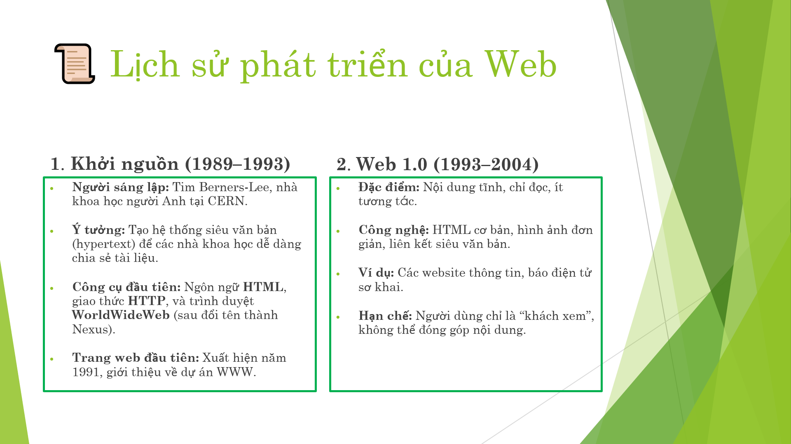
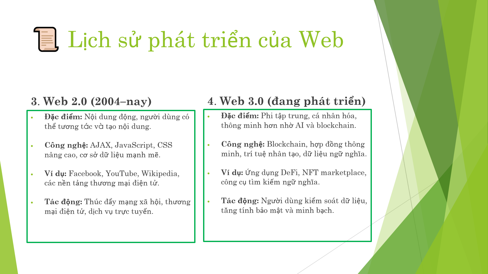

Lịch sử phát triển của Web.
Web ra đời năm 1989 do Tim Berners-Lee tại CERN, ban đầu chỉ để chia sẻ
thông tin khoa học. Từ đó, web phát triển qua các giai đoạn
Web 1.0 (Web tĩnh),
Web 2.0 (tương tác, mạng xã hội),
và hiện nay là Web 3.0 (phi tập trung, blockchain, AI).
Hình ảnh tóm tắt giai đoạn phát triển của Web.
Lịch sử phát triển của Web

Hình 1
Lịch sử phát triển của Web

Hình 2
Trang chủ